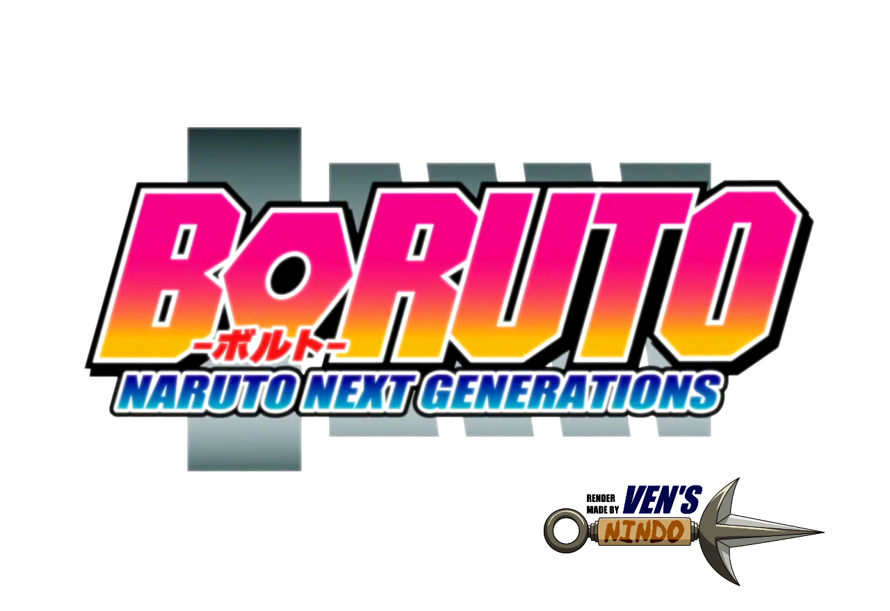

Timeline

It tells the story of Naruto Uzumaki, a young ninja who seeks recognition from his peers and dreams of becoming the Hokage, the leader of his village. The story is told in two parts – the first set in Naruto's pre-teen years, and the second in his teens. [2]
In the beginning of Naruto, he is 11 years old and as the show ended, he was around 12 years old
Naruto Shippuden
The plot of the second part of the manga and anime series Naruto, titled Naruto: Shippūden (疾風伝, Literally meaning: Hurricane Chronicles) in the anime and simply Part II in the manga, was set two and a half years after the present timeline in Part I. The new setting for the series began with volume 28 (chapter 245) of the manga. The anime adaptation of the manga started airing on February 15 2007, premiering with the first two episodes debuting in a one-hour special. Viz is working on a North American DVD series of Naruto: Shippūden, which was first released on September 29, 2009. The US publication of the manga began in January 2008, in the US issue of Shonen Jump. [3]
Here, Naruto is 15 years old
Blank Period
The Blank Period explores the stories of various characters after the conclusion of the original manga in the Naruto Hiden (NARUTO -ナルト- 秘伝, Literally meaning: Naruto Secret Chronicles) series and tenth overall film The Last: Naruto the Movie. [3]
Here, Naruto is 22 - 26 years old
Boruto: Naruto Next Generations
Years before a fight against a person named Kawaki in a ruined Hidden Leaf Village, Boruto Uzumaki remembers his childhood as he describes himself as a child who detests his home as his father, Naruto, the leader of the area has to spend little time with his family due to his job. [4]
Here, Naruto is about 33 years old